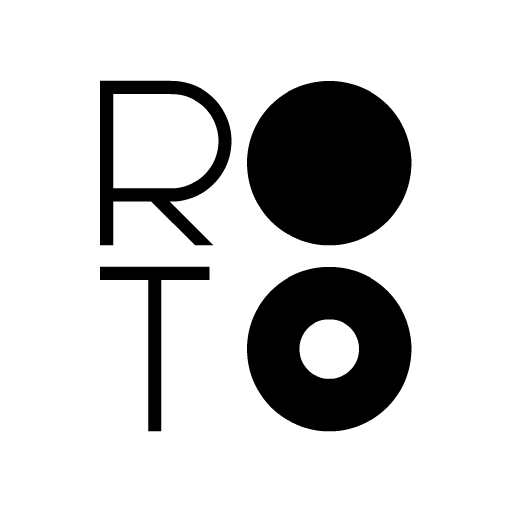

Description
Immerse yourself in this circular adventure filled with big and mean balls. ROTO is a fresh take on the puzzle-platformer genre with its ultra simple gameplay accompanied by neat and minimal greyscale art style that will test your reflexes and will make you stick to it until you complete all the levels and meet all the balls. The game offers a simple one tap control and using that, the player has to jump across different rotatory platforms, collecting stars, avoiding deadly obstacles and unlocking more levels as you go.
History
ROTO was developed a group of college friends from a design college in a 24-hour game jam called 'Global Game Development Competition. After winning the 'Honorable Mention' award in its category, the team decided to work upon the game to release it commercially on mobile platforms under the label Lucid Labs.
Features
- A unique and simple one-tap gameplay which gets challenging over time (even your granny could play it but can't complete it).
- A minimalist and clean art style adding to the simplicity as well as annoyance of the game.
- Sound Design by Ashley Read - guy behind the sound design of Watch Dogs and The Crew.
- 5 Level Packs with over 150 levels offering new and bigger balls.
- A Free-to-play monetization model that focuses more on player's ability to play than his ability to pay.
Videos
Trailer — YouTube
Images
{kind=link}
{kind=link}
{kind=link}
{kind=link}
Logo & Icon
{kind=link}
Awards & Recognition
- "Nominee: Best Free-to-Play" Casual Connect Asia, 2014
Selected Articles
-
Players that enjoy simplistic one-touch puzzle platformers may get some mileage out of ROTO
, 148 Apps -
ROTO has great level design where the novice can progress while those looking for a real challenge will have hours and hours of frustrating fun, 9/10 - SUPER!
, App Store Arcade -
Top 25 Apps you should play this weekend!
, Android Tapp -
ROTO – IT’S O-MAZING! 4.5 out of 5 stars
, Apps400
About Lucid Labs Pvt. Ltd.
- Boilerplate
- Lucid Labs is an independent game development studio from India who likes to work on games which are experimental and artistic in nature. Lucid Labs consists of a single man, a man who thinks collaborating with new people from all over the world for each game is sheer fun and joy. We like to craft experiences which are innovative and involve human emotions. We make games (not) for the masses.
- More information
- More information on Lucid Labs Pvt. Ltd., our logo & relevant media are available here.
ROTO Credits
- Chirag Chopra
- Game Design, Art
- Sujeet Kumar
- Programming
- Ashley Read
- Sound Design, Freelancer
- Ankush Madad
- Game Design
- Rahul Narayanan
- Art, Freelancer
- Pramod Nautiyal
- Game Design